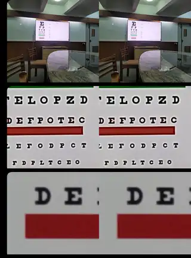
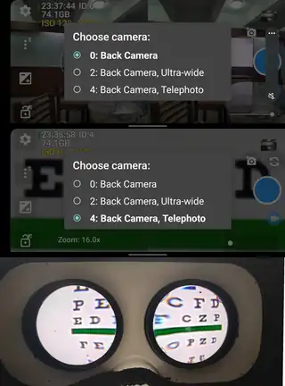

Open TeleScope VR
صور وتصميم
Open Telescope VR is a specialized VR-based accessibility camera application for people with low vision. The app lets one use their smartphone as a digital telescope, by mounting it into a standard VR viewer and connecting an external keyboard, remote or gamepad. This allows people with low-vision t
✓ ترخيص مفتوح (GPL-3.0-only) · آخر تحديث: 2026-09-23
0.4.6.oc.1.56.2الإصدار
3.9 MBالحجم
GPL-3.0-onlyالرخصة
Open in Kanzتحميل APK (3.9 MB)
Download APK
SHA-256: 8853f734c36de9531091a240338a4cdba32b9804de99bc3c34af86012fef35d9


امسح الكود لفتح صفحة التطبيق
Scan to open this app page
لو كنز مش متثبت عندك: نزّل متجر كنز.
Not installed? Get the Kanz store.